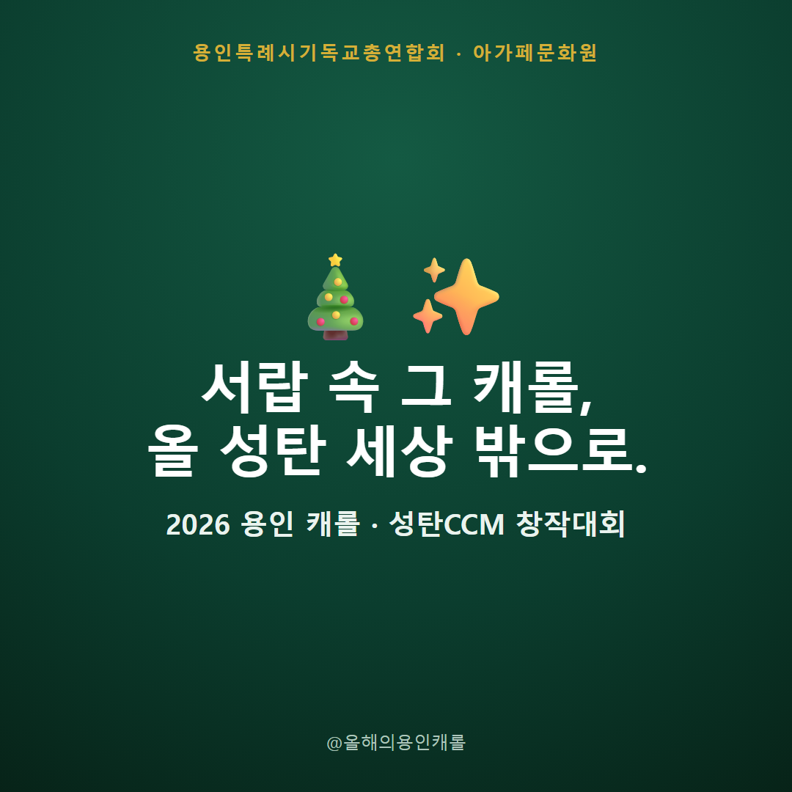
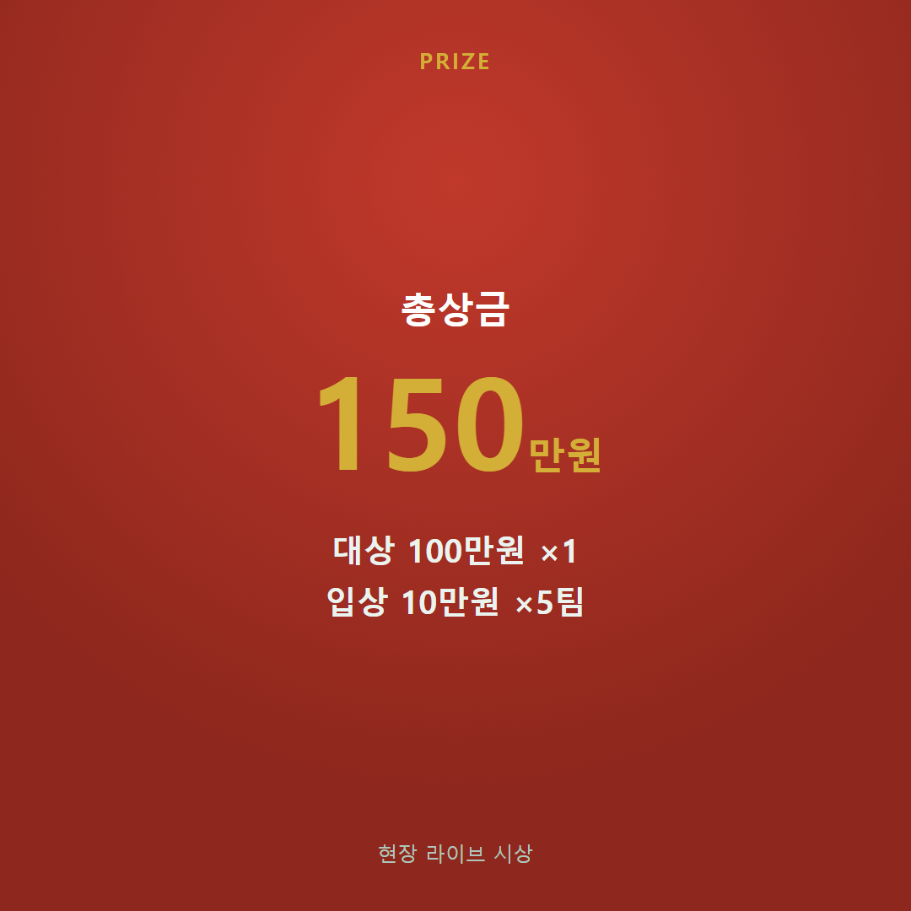
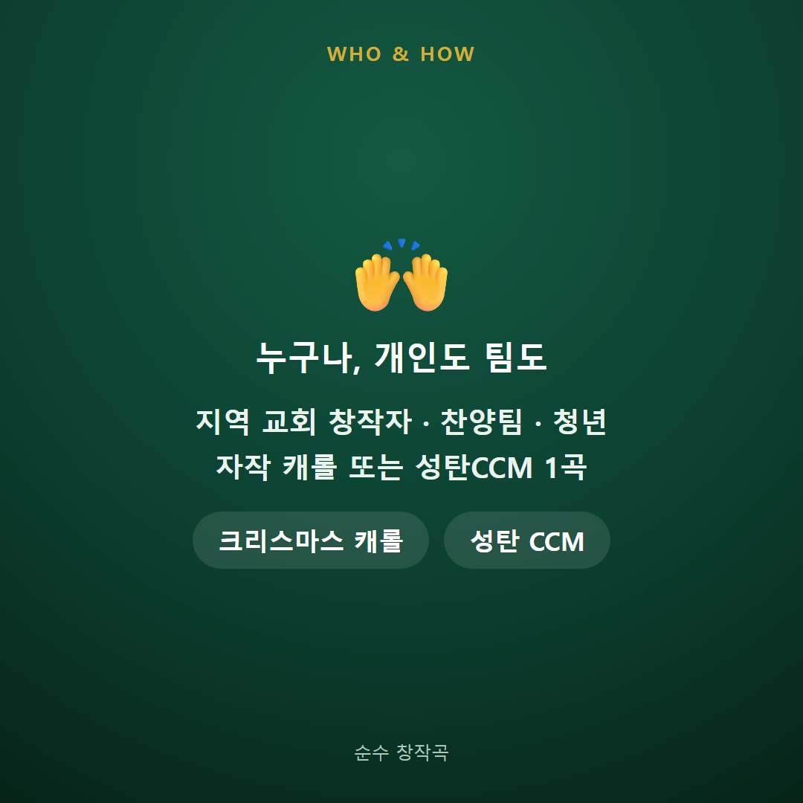
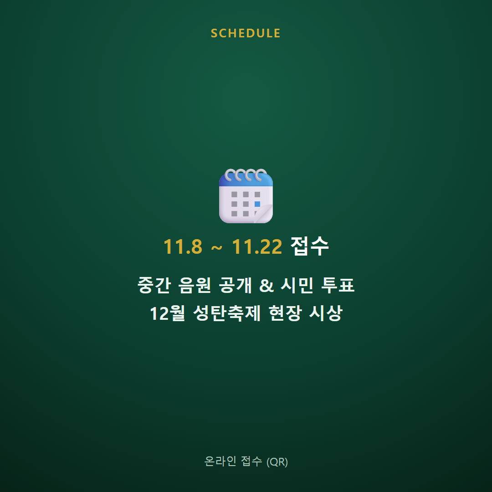

용인 시민과 교회가 함께 성탄의 기쁨을 나누고, 지역의 이웃을 섬기는 30일간의 축제
세리공원부터 용인중앙시장까지 성탄트리·조형물·현수기와 포토존으로 용인 전역에 성탄의 빛을 밝힙니다.
세리공원~중앙시장예수사랑나눔 티켓으로 지역 시장 상권을 살리고, 조성된 기금으로 소외된 이웃을 돕습니다.
상생·나눔문화공연과 나눔을 통해 예수 그리스도의 사랑과 복음의 의미를 지역사회에 따뜻하게 전합니다.
지역 섬김트리 점등 · 문화공연 · 사랑 나눔의 세 축으로 진행됩니다
11.28(토) 17:30 점등식과 퍼레이드. 세리공원~용인중앙시장 성탄축제거리 조성 및 트리·포토존·현수기(128조) 설치.
용인중앙시장 공연장에서 30일간 워십·찬양·악기연주·연극 순차 공연 및 외부 초청 공연. 신앙·민원 상담 부스 운영.
5,000원권 티켓으로 지역 상권을 살리고 차액을 전액 기금으로 조성해 용인시 지정 소외계층 지원 단체에 전달.
크리스마스 캐롤 · 성탄 CCM 창작대회 — 거리에서 태어난 노래
누구나 따라 부를 밝고 친숙한 성탄곡. 거리·광장 송출에 어울리는 대중적인 순수 창작곡. (장르 무관)
성육신·구원·빛으로 오신 예수의 의미를 담은 예배·찬양용 창작곡.
대회 안내서와 참가신청서를 내려받아 작성해 주세요 (PDF)
※ 접수는 온라인 폼으로 진행됩니다. 접수 링크·QR은 추후 공지됩니다.
공유해 주시면 큰 힘이 됩니다 🎄




편집하려면 암호를 입력하세요